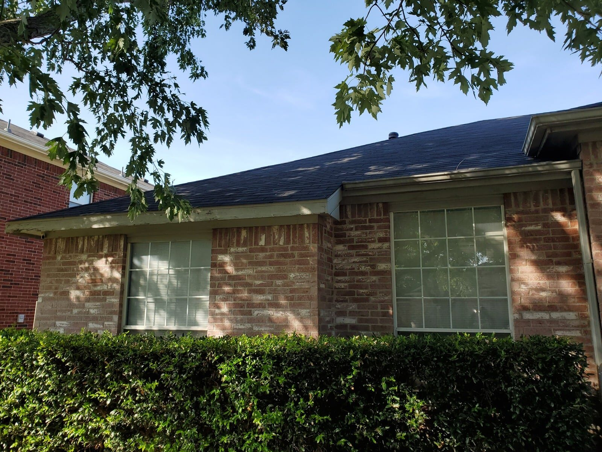

Dallas-Fort Worth Roofing Contractor
Roof Repair & Roof Replacement in DFW
Roof inspections, storm damage repairs, full replacement, emergency tarping, flashing and ventilation work for homes and commercial properties.
Complete Roofing Service
Roofing Based on the Actual Condition of the Property
A roofing estimate should start with the roof that is actually on the building. We review visible shingle condition, flashing, penetrations, vents, transitions, roof edges and storm-related damage before recommending repair or replacement.
When replacement is appropriate, Luna General Contractors coordinates tear-off, decking-related repairs when needed, underlayment, shingles, flashing, ventilation and cleanup. For smaller issues, we can focus the scope on the affected area instead of automatically recommending a full roof.
Request Your EstimateWhat We Look For
Common Roofing Problems in North Texas
North Texas roofs can be affected by hail, high wind, lifted or missing shingles, failed sealant, exposed fasteners, deteriorated flashing and age-related wear. Leaks may also appear around pipe penetrations, valleys, chimneys, wall transitions or roof-to-wall flashing.
Finding the source matters because interior staining does not always sit directly below the exterior opening. A useful roofing scope connects the visible symptoms with the likely entry point and the construction needed to correct it.
Real Projects
Roofing Project Photos
Real residential roofing work by Luna General Contractors.


Service Areas
Roofing Across Dallas-Fort Worth
We serve homeowners and property owners throughout DFW, including Dallas, Fort Worth, Arlington, Mansfield, Midlothian, Waxahachie and Weatherford. Visit our service areas page for additional cities.
Roofing FAQ
Questions About Roof Repair and Replacement
These answers explain the construction factors we review. Insurance coverage remains subject to the policy and carrier decision.
Request a Roof EstimateHow much does a roof replacement cost in Dallas–Fort Worth?
Roof replacement cost depends on roof size, pitch, shingle type, number of layers, decking condition, flashing, ventilation, access and disposal. A site inspection is the best way to build an accurate scope and estimate.
Do you provide roof inspections after storms in DFW?
Yes. We inspect visible conditions on shingles, vents, flashing, penetrations and related exterior components, then prepare a repair or replacement scope based on the property.
Should I repair a few shingles or replace the entire roof?
That depends on the affected area, roof age, overall condition, whether compatible materials are available, and whether a repair can be completed without damaging surrounding shingles.
Does homeowners insurance pay for roof replacement in Texas?
Coverage depends on the policy, cause of loss, deductible, exclusions and the carrier's inspection. Storm damage may qualify, while wear, maintenance issues or excluded causes may not.
What is the difference between ACV and RCV on a roofing claim?
Actual Cash Value generally reflects replacement cost minus depreciation. Replacement Cost Value generally reflects the estimated cost to replace covered property, subject to policy terms, limits and deductible.
Can roof depreciation be recovered after the work is completed?
On some replacement-cost policies, recoverable depreciation may be released after covered repairs are completed and documented. The policy and settlement documents control whether depreciation is recoverable.
Do solar panels need to be removed for roof replacement?
If panels cover areas that require roofing work, they generally need to be professionally detached and reset. The scope should address scheduling, roof penetrations, flashing and responsibility for reconnecting the system.
Why does roof pitch affect the project?
Pitch affects measurements, safety setup, access, labor and material handling. Steeper slopes can require additional fall protection and increase the roof surface area compared with the building footprint.
Free Estimate
Need a Roof Inspection, Repair or Replacement?
Call Luna General Contractors for roofing service throughout Dallas-Fort Worth.